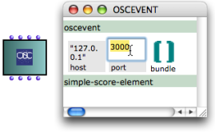

Editors
Factory boxes have an internal editor . As a complement to the algorithmic creation of objects, it is a means to build, or modify them manually once objects have been initialized. Some elementary classes have a default editor, but most objects used in OM have specifically dedicated editors, such as score editors, sound file editors, BPF editors, etc. All editors open with a double click on a factory box.
Basic Editors
When a class has only a default – basic – editor, it opens with a double click. This editor has a number of slots[1], which represent the object's parameters. Each slot is represented by a grey box and can be edited directly. To edit the value of a component :
|  The default editor of an OSC-event. |
If the value of a slot is iself an instance of a class (e.g. a note, etc.), the internal editor of this class opens at double-clicking it in the parent editor.
Lists (e.g., "bundle" in the previous example) also open in a specific internal list editor.
List in OM editors have a specific editor where each item is presented in a separate cell (and can in turn be edited).
A list editor displays components values, indexes and navigation arrows.
 A List editor |
|
It is not possible to modify the number of elements in a List using the list editor.
Specific Editors
Some factory boxes have a specific editor, which also opens with a double click.
To open the default editor of such factory box, press Cmd and double click on the box.
Note that both editors can't be open at the same time. Close the editor manually so as to open the other editor.
Preserving Manual Modifications
Once modifications have been done in an editor, the corresponding box is locked automatically . Indeed, a new evaluation of an unlocked box would compute a new object and replace the current value, hence canceling all previous modifications. Of course, the box can still be unlocked if necessary.
To lock or unlock a box, select it and press b.

- Slot
In object oriented programming, a slot represents and attribute of a class. For instance, the class "note" in OM has 4 slots : pitch, duration, velocity, and MIDI channel.
- OpenMusic Documentation
- OM 6.6 User Manual
- Introduction
- System Configuration and Installation
- Going Through an OM Session
- The OM Environment
- Visual Programming I
- Visual Programming II
- Basic Tools
- Score Objects
- Maquettes
- Sheet
- MIDI
- Audio
- SDIF
- Lisp Programming
- Errors and Problems
- OpenMusic QuickStart